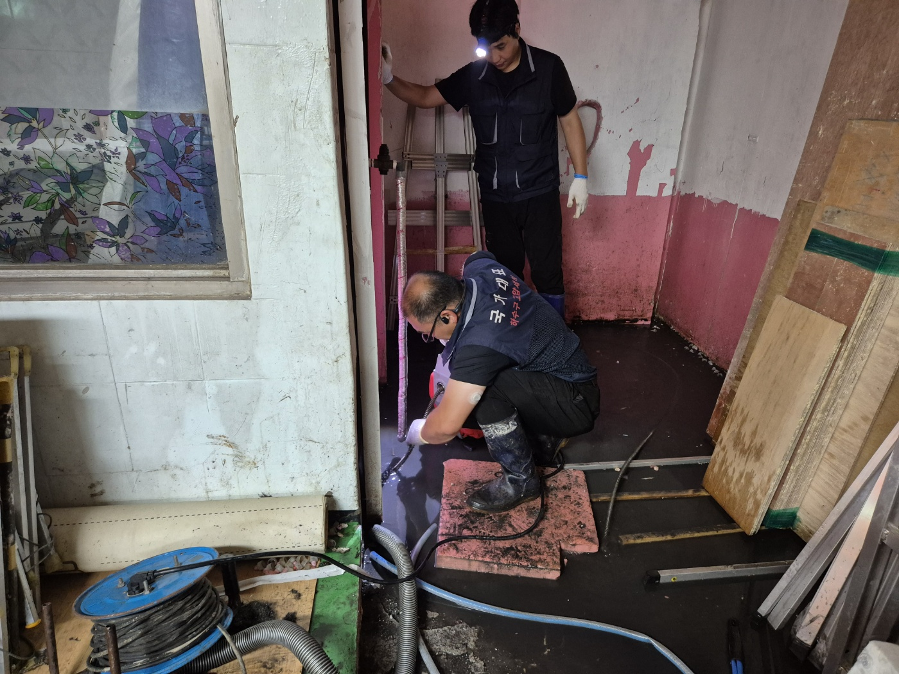
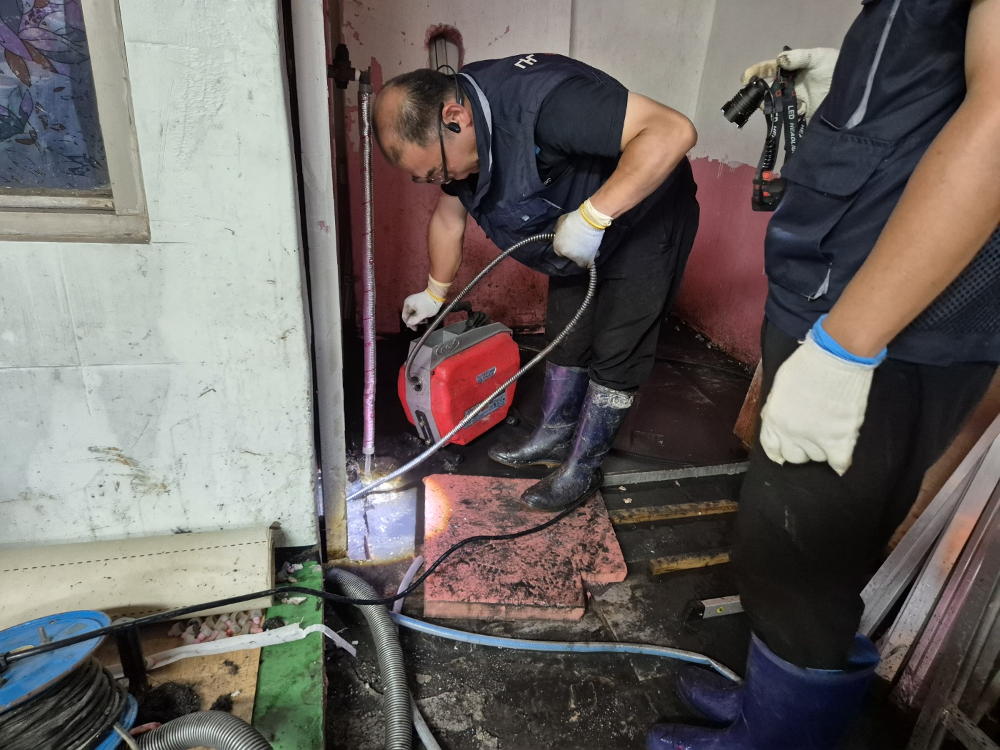
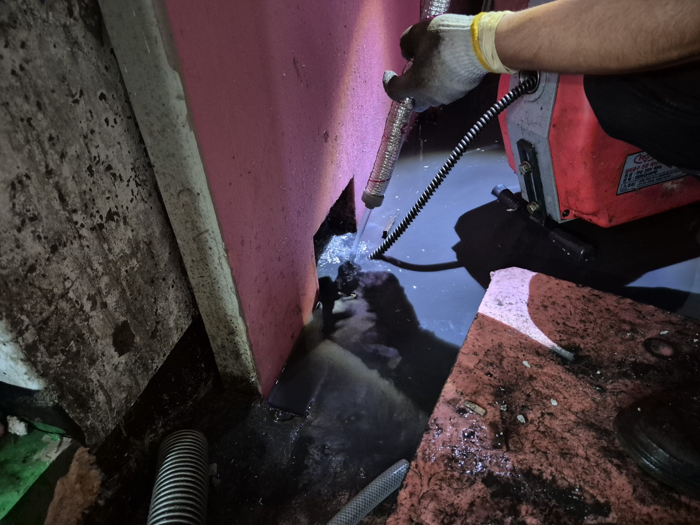
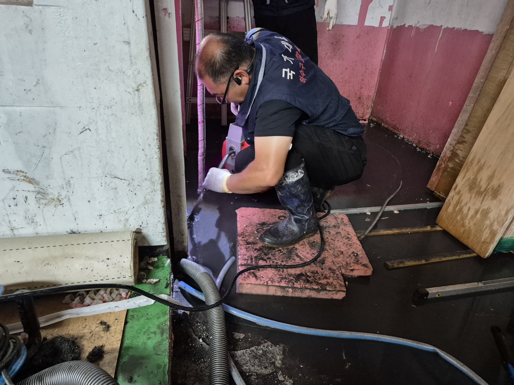

안녕하세요.. 고고고 설비입니다.. 오늘은 평택시 세교동에 있는 도배 작업장에서 하수구막힘 신고를 받고 다녀온 현장입니다.
작업장 안쪽 바닥 배수구가 막혀서 물이 역류한 상태였는데, 도배지 자재와 각목들이 쌓여있는 작업 공간 바닥 전체가 시커먼 물로 덮여있었습니다.. 물이 깊어서 장화 없이는 들어가기도 힘든 상태였어요. 스테인드글라스 창문이 있는 오래된 건물이라 배관도 그만큼 세월이 느껴지더라고요.
벽과 바닥 사이 좁은 틈으로 배수구가 나 있었는데, 그 틈에 맞춰 전동 와이어 케이블을 조금씩 밀어 넣기 시작했습니다.

틈이 워낙 좁아서 케이블 각도를 이리저리 맞춰가며 안쪽으로 밀어 넣어야 했어요.. 랜턴으로 비춰가며 물속 배수구 위치를 계속 확인했습니다. 물에 무릎을 꿇고 자세를 낮춰야 겨우 틈 안쪽이 보일 정도였습니다.

한 번에 뚫리는 느낌은 아니라서 케이블을 넣었다 빼기를 여러 번 반복했습니다. 두 분이 같이 낮은 자세로 계속 작업을 이어가셨어요.

막힌 부분이 뚫리면서 고여있던 물이 서서히 빠지기 시작했습니다. 작업장 바닥을 가득 채웠던 물이 눈에 띄게 줄어드는 걸 확인하고 나서야 장비를 정리하고 나왔어요.
작업장이나 창고처럼 자재가 많이 쌓이는 공간은 먼지나 부스러기가 배수구로 계속 흘러 들어가기 쉬운 만큼, 배수구 주변을 정기적으로 청소해주시는 게 재발을 막는 데 도움이 됩니다.
고고고 설비는 주택, 아파트, 원룸, 상가, 공장의 생활 하수 오수 배관을 관리해 주는 업체입니다. 고고고 설비에 전화 주시면 친절상담 정확한 진단 확실한 해결로 보답해 드리겠습니다!!